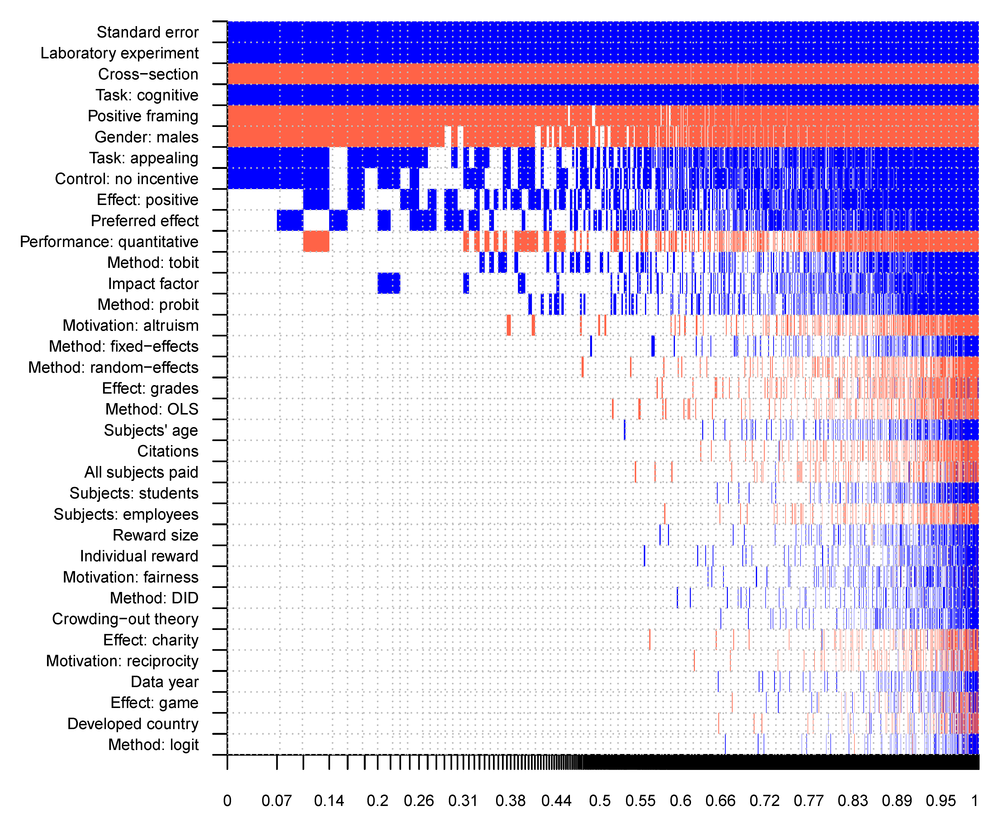

Abstract
Economists typically model financial incentives as enhancing performance, whereas psychologists emphasize that incentives can backfire. Experimental findings are mixed. We collect 2,193 estimates from 88 economics experiments and account for 48 contextual factors. Using recent advances in correcting for publication bias and p-hacking, we find that the corrected mean effect of financial incentives on performance is close to zero across most field contexts. Laboratory settings and loss framing yield statistically significant but modest positive effects even after bias correction. Our results suggest that increasing financial rewards rarely produces large performance gains in the experimental settings most studied by economists.
Fig: Heterogeneity in the effects of incentives
Reference: Cala Petr, Havranek Tomas, Irsova Zuzana, Luskova Martina, Matousek Jindrich, and Jiri Novak (2026), "Financial Incentives and Performance: A Meta-Analysis of Experiments in Economics." Journal of Political Economy Microeconomics, forthcoming.